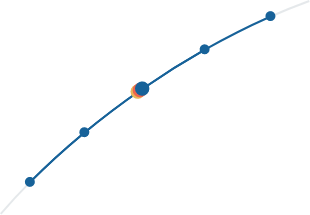

What could you do with all that time?

Scan the QR code with your
phone to find out what kind of
procrastinator you are!
Scan the QR code with your
phone to find out what kind of
procrastinator you are!